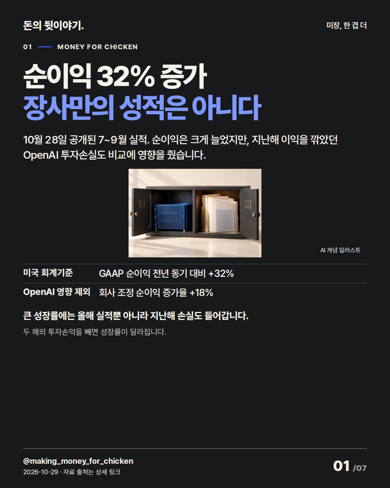
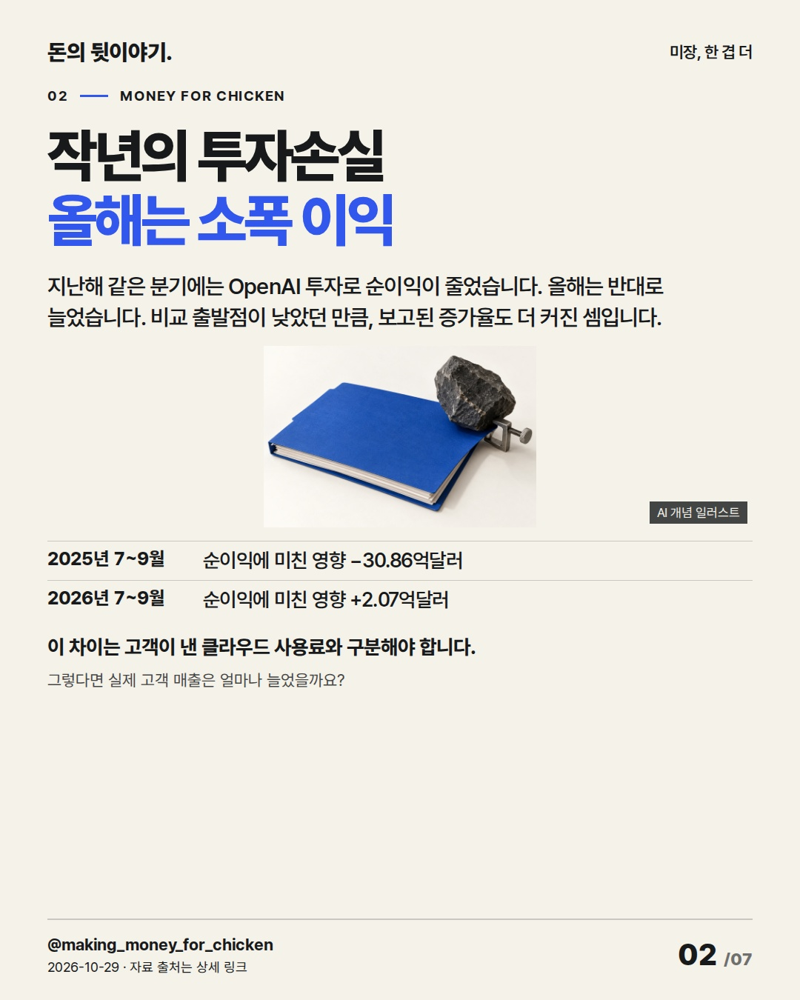
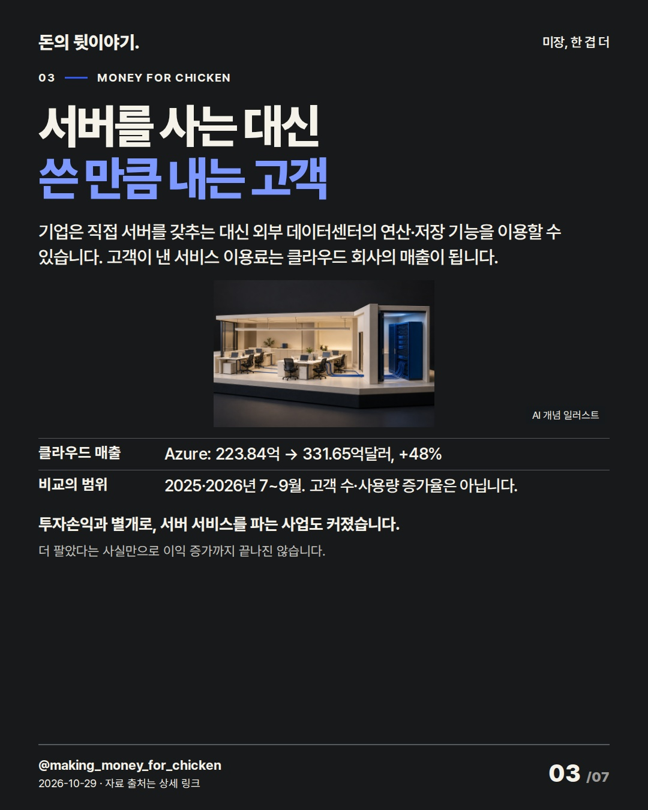
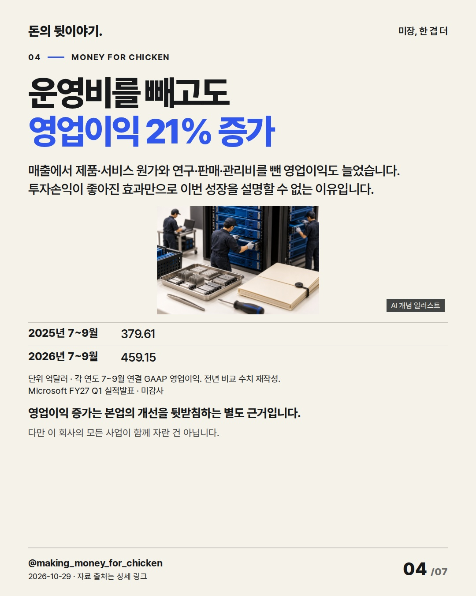
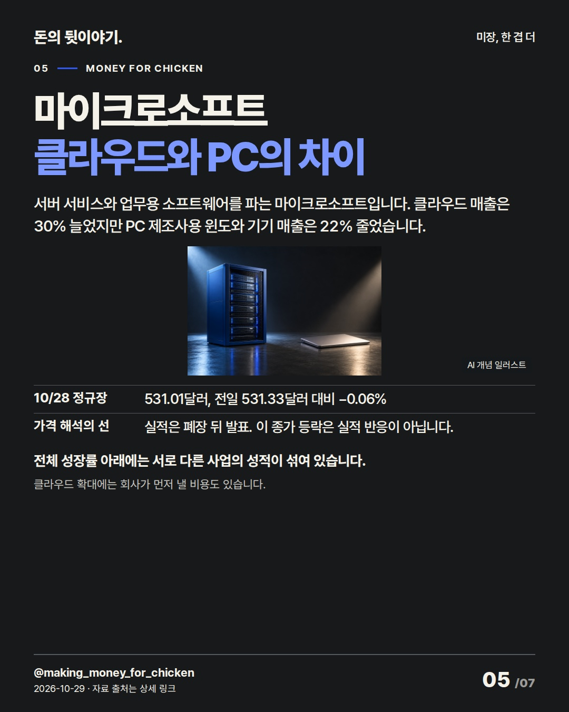
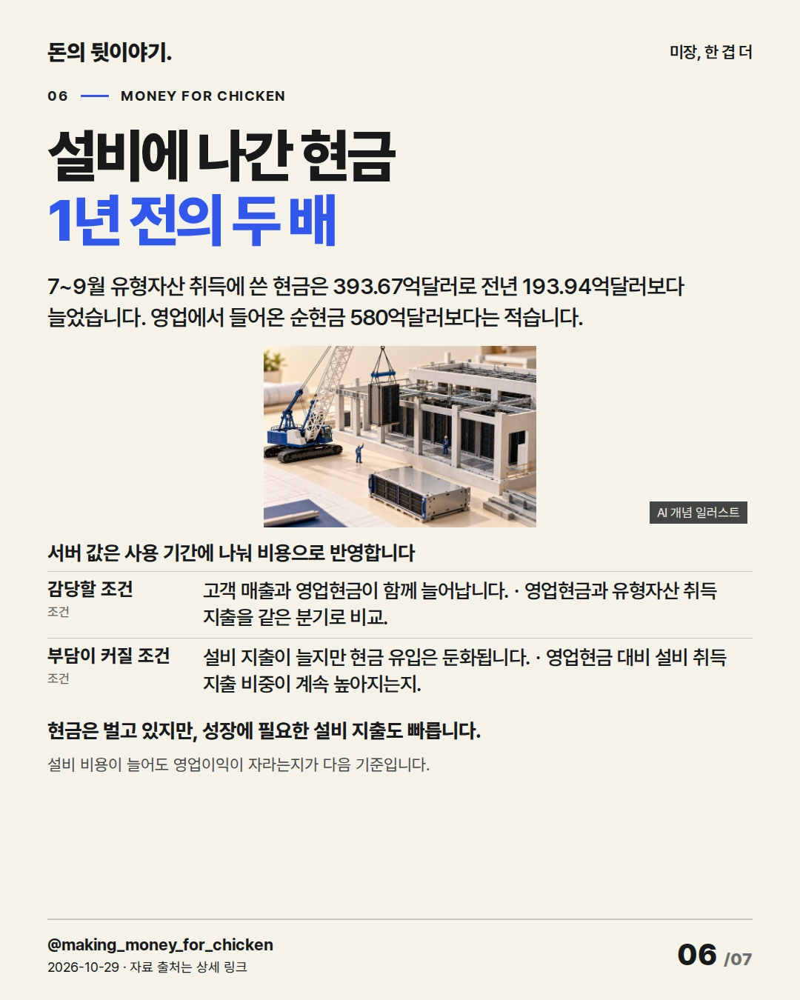
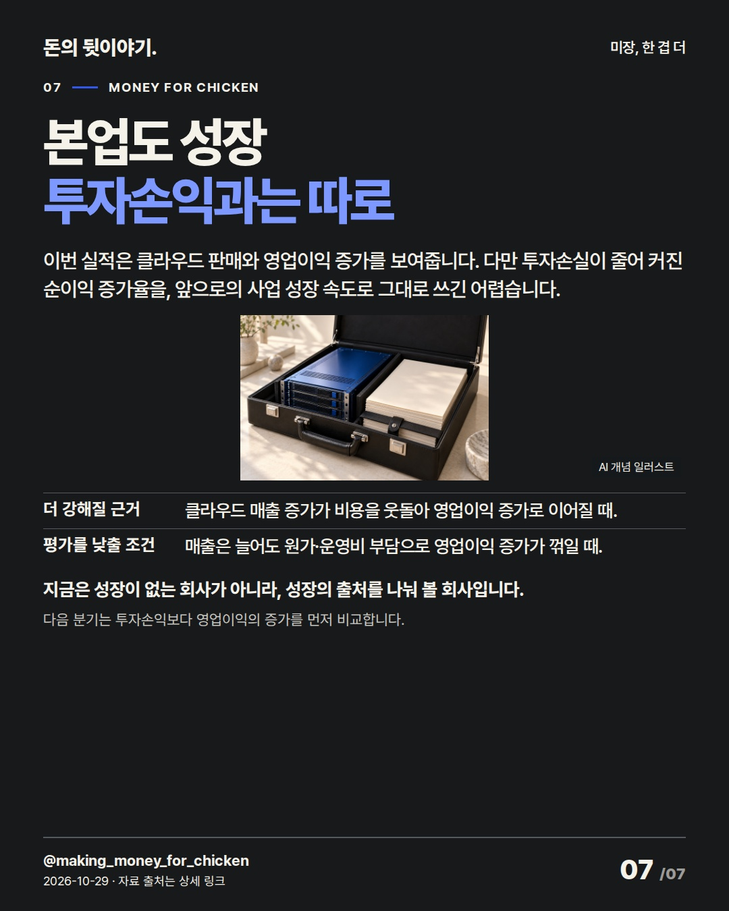

순이익의 큰 증가율에는 올해 잘 판 성적과 지난해 손실이 함께 들어갑니다. 클라우드 판매로 번 이익을 따로 읽어야 다음 실적과 비교할 기준이 남습니다. 마이크로소프트(MSFT) #마이크로소프트 #미국주식 #기업실적

10월 28일 공개된 7~9월 실적. 순이익은 크게 늘었지만, 지난해 이익을 깎았던 OpenAI 투자손실도 비교에 영향을 줬습니다.
큰 성장률에는 올해 실적뿐 아니라 지난해 손실도 들어갑니다. 두 해의 투자손익을 빼면 성장률이 달라집니다.
AI 생성 개념 일러스트 · 실제 현장이나 공식 제품 사진이 아닙니다.
지난해 같은 분기에는 OpenAI 투자로 순이익이 줄었습니다. 올해는 반대로 늘었습니다. 비교 출발점이 낮았던 만큼, 보고된 증가율도 더 커진 셈입니다.
이 차이는 고객이 낸 클라우드 사용료와 구분해야 합니다. 그렇다면 실제 고객 매출은 얼마나 늘었을까요?
AI 생성 개념 일러스트 · 실제 현장이나 공식 제품 사진이 아닙니다.
기업은 직접 서버를 갖추는 대신 외부 데이터센터의 연산·저장 기능을 이용할 수 있습니다. 고객이 낸 서비스 이용료는 클라우드 회사의 매출이 됩니다.
투자손익과 별개로, 서버 서비스를 파는 사업도 커졌습니다. 더 팔았다는 사실만으로 이익 증가까지 끝나진 않습니다.
AI 생성 개념 일러스트 · 실제 현장이나 공식 제품 사진이 아닙니다.
매출에서 제품·서비스 원가와 연구·판매·관리비를 뺀 영업이익도 늘었습니다. 투자손익이 좋아진 효과만으로 이번 성장을 설명할 수 없는 이유입니다.
영업이익 증가는 본업의 개선을 뒷받침하는 별도 근거입니다. 다만 이 회사의 모든 사업이 함께 자란 건 아닙니다. 억달러 · Microsoft FY27 Q1 실적발표 · 미감사 · 각 연도 7~9월 연결 GAAP 영업이익. 전년 비교 수치 재작성.
AI 생성 개념 일러스트 · 실제 현장이나 공식 제품 사진이 아닙니다.
서버 서비스와 업무용 소프트웨어를 파는 마이크로소프트입니다. 클라우드 매출은 30% 늘었지만 PC 제조사용 윈도와 기기 매출은 22% 줄었습니다.
전체 성장률 아래에는 서로 다른 사업의 성적이 섞여 있습니다. 클라우드 확대에는 회사가 먼저 낼 비용도 있습니다.
AI 생성 개념 일러스트 · 실제 현장이나 공식 제품 사진이 아닙니다.
7~9월 유형자산 취득에 쓴 현금은 393.67억달러로 전년 193.94억달러보다 늘었습니다. 영업에서 들어온 순현금 580억달러보다는 적습니다.
현금은 벌고 있지만, 성장에 필요한 설비 지출도 빠릅니다. 설비 비용이 늘어도 영업이익이 자라는지가 다음 기준입니다. 서버 값은 사용 기간에 나눠 비용으로 반영합니다
AI 생성 개념 일러스트 · 실제 현장이나 공식 제품 사진이 아닙니다.
이번 실적은 클라우드 판매와 영업이익 증가를 보여줍니다. 다만 투자손실이 줄어 커진 순이익 증가율을, 앞으로의 사업 성장 속도로 그대로 쓰긴 어렵습니다.
지금은 성장이 없는 회사가 아니라, 성장의 출처를 나눠 볼 회사입니다. 다음 분기는 투자손익보다 영업이익의 증가를 먼저 비교합니다.
AI 생성 개념 일러스트 · 실제 현장이나 공식 제품 사진이 아닙니다.{
"improvement": "최근 하이닉스·BE·이란·한은·인도네시아 원고와 실제 21장을 비교. 이번 개선은 성장률의 원인을 먼저 풀고 결론을 현재 판단으로 끝내기. '순이익32% 증가' 채택; '가짜 성장'은 영업이익21% 증가에 반하고 'Azure48%'만의 제목은 핵심 차이를 놓쳐 제외.",
"reason": "불스토리 공식 웹 「앗 SK, 하이닉스보다 싸다!」 도입·지분구조·EPS 도입 구간과 홍춘욱 「미국 경제의 질주 2023년3분기에도 이어져」 본문 비교. 수치 뒤 구성요소를 푸는 순서 참고. Instagram 전 장 미열람. 권유·목표가·인과 단정은 가져오지 않음.",
"application": "초안 '기저효과로 순이익 성장률 확대'를 2장 '비교 출발점이 낮았던 만큼, 보고된 증가율도 더 커진 셈입니다'로 퇴고. 3장 사용료→4장 영업이익→6장 설비 지출 연결. 첫 preview 7장 검수 후4장 제품 원가 누락과6장 서버 비용의 기간 배분을 보강. 이름은5장 제목, 4장 출처에도 표기.",
"avoided_repetition": "BE처럼 가격 인과 주의만으로 한 장을 채우지 않고5장 근거로 묶음. 최근의 '관건·여력·입증'과 '다음에 확인' 반복, 주주환원·예약매출·EPS 주변 숫자는 제외. 직전 시장 폭 보완은 종목편에 억지 적용하지 않음. 인사이트 미확보. 다음은 부문별 이익률 설명 강화."
}투자 참고용 · 매수·매도 권유 아님.